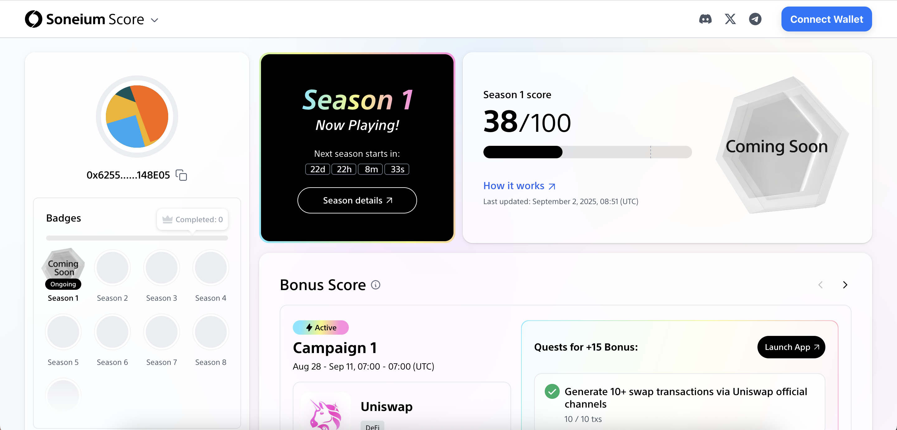
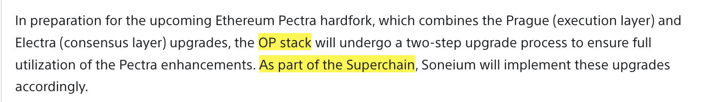
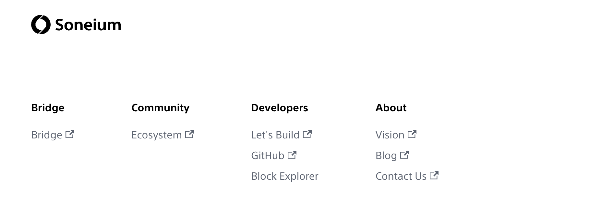

最近 Soneium 在进行一个 积分任务活动，估计会和后续的空投相关联。积分和任务面板都做的很漂亮，交互也很舒服。我之前没有参与过撸毛，这次有兴趣参与一下，所以也看一下 Soneium 这个项目的技术情况。
Soneium 是索尼推出的区块链网络，就是制造相机和拍电影那个索尼，公司背景非常强大，应该是没兴趣自己发币的，至少不是以发币为目的发行一条链。Soneium 是一条以太坊的 Layer2 网络，所以接下来技术方面的内容，应该会聚焦到以太坊 Layer2 上，比如用了哪种 L2 方案，网络参数是什么，有没有创新和改进，等等。
Soneium 的文档里明确说了，用的 OP Stack 方案，并且加入了 Superchain 生态，应该是直接使用了 OP Stack 开源出来的技术方案，没有自己做改进那种。这其实也有意思，一方面，Base 和 Sony 都在用 OP Stack 做 Layer2，项目周期肯定是一年以上的。另一方面，Vitalik 一直在说 ZK 是未来技术发展的趋势，要用 ZK 技术把 L2 的提款速度缩短到 1 小时内。假如 ZK 体系成熟了，OP Stack 能无缝升级吗？感觉不太能，因为历史交易完全不能验证。
（我发现 Vitalik 的博客现在不能访问了 vitalik.eth.limo ，应该不是简单的网络问题。这就是用 IPFS 搭博客的坏处。以前 Vitalik 有个 .ca 域名的博客，后来直接不用了，转到了 .eth.limo 上。）
这也引起我们一个思考，Sony 现在都在用 OP Stack 搞 L2，我们要不要搞呢？现在 L2 已经不是两年前的热度了，但是 OP Stack 的技术方案经过了生产级别的验证，现在更稳定可靠。至于 ZK L2，有个问题是需要非常强大算力的服务器来做 prover，跟矿机一样，有点不是太友好。
在技术难度上，OP Stack 的部署和运维是相对简单的，而且只需要 follow OP 的技术动态就可以，对于企业或者项目方来说，也许会是不错的选择。当然，只是得维护一大堆 合约 了。
说实话 Soneium 在技术上没啥亮点，这个项目简单到连白皮书都不需要，玩的就是生态。